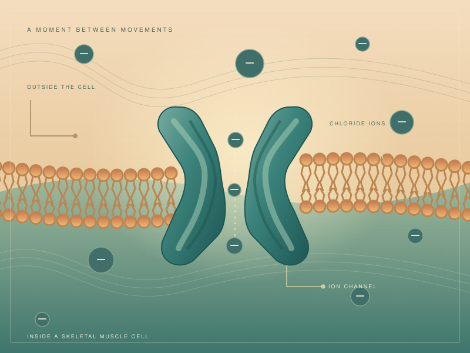

A LITTLE CURIOSITY. A DEEPER CONNECTION.
Piece together the biology.
A scientific discovery, one piece at a time.
ROUND0112 PIECES · ONE DISCOVERY

01 / ELECTRICAL BALANCECONCEPTUAL ILLUSTRATION · NOT TO SCALE
00:00
YOUR PIECESDrag a piece, or select it and tap its place.
Start anywhere. There’s no wrong piece to begin with.
THE PICTURE IS COMPLETE
Every piece adds understanding.
THE CONNECTION
From a channel to a phenotype
ONE THING TO TAKE WITH YOU
What does this channel help regulate?
Educational summary from MedlinePlus Genetics. OMIM links to the matching condition entry. The illustration is conceptual; it does not depict an individual or an atomic protein structure.